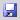

2.3.8.1. Basic editing
The content editor can be opened by one of the following methods:
- Double-clicking the content node in the tree structure.
- Right-clicking the content node in the tree structure and selecting "Edit content" from the context menu.
- Double-clicking the content in the HTML preview area. The border of the content node is indicated with dashed border lines, when the mouse is moved over a content node. This way of opening a content node in the content editor only works for HTML preview but not for PDF preview.
The content editor consists of
The title line shows the content title, the product to which this content belongs, the version of the product which is edited and the language which is currently edited (the text "original" indicates that the original content is edited, whereas in translation mode the two character language code of the selected translation language is shown).
In the editing area the content can be edited as known from common word processors. Please be aware that pressing the "Return" button will create a new paragraph. Pressing "Shift-Return" will create a line break without creating a new paragraph.
By clicking the button "Save and Close" in the bottom panel, the content will be saved and the editor window will be closed. By clicking the "Save" button the content will be saved without closing the editor window. Instead of clicking the "Save" button in the bottom panel you can also click the save  button in the toolbar or press the shortcut keys CTRL+S. Click the button "Cancel" to close the editor window without saving any changes.
Note: As long as the editor window is opened, the content is locked, i.e. no other user can edit content. In the content tree structure this is indicated by a red content icon (

).
The progress slider () allows to adjust the progress value of the content node. Please adjust the progress slider before pressing the "Save" or "Save and close" button. When the "Cancel" button is pressed, any adjustments of the progress slider will be discarded.
The buttons in the tool bar are described in the following sub-chapters.
To position the input cursor with the mouse, move the mouse pointer to the desired location and then click the left mouse button. To change the position of the cursor with the keyboard use the arrow-keys (Up, Down, Left, Right) or the Line-start/end or Page-up/down keys. You can now insert and edit text or other content elements by using the keyboard or by calling any functions from the toolbar as described in the following chapters. Use the delete key to delete text or content elements at the current cursor position or the currently selected content. The text editing functionality is similar to other WYSIWYG word processors, e.g. MS Word.
To select text with the mouse, move the mouse pointer to the beginning of the text to be selected, click the left mouse button, move the mouse pointer to the end of the text while keeping the left mouse button pressed and finally release the mouse button. The text should now be selected. The currently selected text is marked with a blue background color.
You can easily select a single word by double clicking the word to be selected.
You can select a whole paragraph by triple-clicking the paragraph (i.e. pressing the left mouse button three times quickly within the paragraph).
To select text with the keyboard, move the cursor to the beginning of the text to be selected. Now, press the Shift key and keep it pressed while moving the cursor to the end of the text. Finally, release the Shift key. The selected text is then marked with a blue background color.
Docmenta distinguishes following types of content elements:
- paragraphs
- normal paragraphs
- header-paragraphs
- lists
- tables
A paragraph contains a sequence of text and/or images. The text within a paragraph can be styled using inline styles (see
Chapter 2.4, Styles workspace for details). Furthermore text within a paragraph can be marked as a link to another position within the product documentation as described in
Section 2.3.8.8, “Links”. The insertion of images within a paragraph is described in
Section 2.3.8.7, “Images”. The line breaks within a paragraph will automatically be determined by the formatter based on the available space of the output area (nevertheless, manual line breaks can be inserted with Shift+Enter as described below).
A header-paragraph is a special paragraph which represents the headline for the following paragraph(s). See below for details on header-paragraphs.
Following example shows content which contains all types of content elements:
In the example above, the first paragraph contains text, links and inline images. The second header paragraph with text "Note:" is the header of the third paragraph. The fourth paragraph contains as the only element an image. The fifth content element is an ordered list with two list items followed by an indented paragraph. The eighth content element is again an ordered list which continues the previous list. (Note: A list item cannot contain paragraphs, therefore indented paragraphs and continued lists have to be used instead). The nineth content element is a table.
A horizontal space will automatically be inserted between two successive content elements (e.g. two paragraphs). The amount of space which is inserted is determined by the "Paragraph spacing" setting in the output configuration (see
Section 2.6.2, “Output configuration”).
To insert a new paragraph before or after an existing paragraph, place the cursor at the beginning or the end of the existing paragraph and then press the Enter key.
To split an existing paragraph into two paragraphs place the cursor at the position where the paragraph shall be splitted and then press the Enter key. This will move the content which follows the cursor position into a new paragraph as depicted in the following illustration:
To merge two successive paragraphs into one paragraph, place the cursor at the beginning of the second paragraph and press the Backspace key. Alternatively you can also place the cursor at the end of the first paragraph and press the Delete key. This will append the content of the second paragraph to the end of the first paragraph as depicted in the following illustration:
Select a single paragraph or a sequence of paragraphs as described in the text selection instructions above (e.g. triple-click a single paragraph or move the cursor to the start of the first paragraph, press Shift and then move the cursor to the end of the last paragraph while keeping the Shift key pressed). The selected paragraphs will then be indicated with a blue background color. Afterwards, press the Delete key to remove all selected paragraphs.
The line breaks within a paragraph will automatically be inserted by the formatter based on the available space of the output area. Nevertheless, it is possible to insert a manual line break within a paragraph by placing the cursor at the location where the line break shall be inserted and then pressing Shift+Enter.
Note: Compared to inserting a new paragraph a manual line break will not insert any additional horizontal space between the new line and the previous line.
Sometimes it is required to create a headline for a paragraph, but the headline shall not appear in the table of contents. In this case the solution is to create a header-paragraph. A header-paragraph is a normal paragraph which is formatted with a user-defined block-style. Furthermore, for page-oriented output, the formatting engine assures that no page break is inserted between the header-paragraph and the immediatelly following paragraph.
Compared to section titles, a header-paragraph is not listed in the table of contents of a publication. Furthermore no chapter/section numbers are created for header paragraphs. In general it is preferable to use section-nodes instead of header-paragraphs, because section-nodes can easily be moved and referenced (see
Section 2.3.3, “Node types” for the creation of section-nodes). Nevertheless there are positions within the content where a section-node cannot be inserted, e.g. within table cells and lists. Therefore, header-paragraphs have to be used to create headlines within table cells and lists as shown in the example above.
To be able to create a header-paragraph a header-style has to exist. A header-style is a block-style with a Style-ID that starts with "header". For example, the pre-defined block-style "header_para" is a header-style. To change a normal paragraph into a header-paragraph, assign a header-style to the paragraph by performing following steps:
- Place the cursor within the paragraph (but not within an inline style).
- Open the "Insert/Edit Attributes" dialog (see Edit attributes).
- Set the "Class" attribute to the desired block-style by selecting the block-style from the drop-down. In the following screenshot the block-style "header_para" is selected.
- Click "Insert" to close the dialog. The paragraph is then formatted with the selected block-style.
Note that you can create multiple header-styles just by creating new block-styles with the ID-prefix "header" (e.g. "header_para2").
As an example, the indention of a single list shall be increased by 20pt and the list shall be enclosed in a dashed box with grey background-color. As you do not want to increase the indention for all lists, it is not possible to increase the list indention in the output configuration. Therefore, create a new block-style with a dashed borderline, a margin-left value of "20pt" and the background-color set to the value "#E0E0E0". To have some space between the list and any previous content, also set a margin-top value of "12pt".
Following screenshots show the settings for the block-style to be created (see
Chapter 2.4, Styles workspace for information on how to create user-defined styles):
After the style has benn created, open the content-editor and place the cursor within the list to be formatted. The easiest way to select a single element is to select the corresponding path-element in the status-line. In our example, select the "ol" element (ol = ordered list) as indicated by the red marker in the following screenshot:
Clicking on an element in the path, selects the complete element. In our example, the complete list is now selected. Alternatively, you could also select a single element by range-selection as shown in the next section.
Finally, select the previously created block-style from styles listbox. The block-style is then applied to the selected element, i.e. the list:
A block-style can also be wrapped around a sequence of content elements.
As an example, a paragraph shall be followed by a list. The paragraph and the list shall be enclosed with a dashed box which is indented by 20pt and which is formatted with a grey background color as shown in the following example:
To achieve this, create a block-style which has a dashed borderline, a margin-top value of "12pt", a margin-left value of "20pt" and the background-color set to the value "#E0E0E0". You can re-use the block-style of the previous section (see above).
Then open the content-editor and select the paragraph and the list (e.g. move the cursor to the start of the paragraph, press Shift, move the cursor to the end of the list while keeping the Shift key pressed, and then release the Shift key):
Now, select the block-style from styles listbox of the content-editor. The block-style is then applied to both selected content elements:
The "Cut" operation removes the currently selected text, paragraph(s) or any other selected block and moves it to the Clipboard. The operation can also be called by the shortcut key Ctrl+X. The removed block can then be inserted at some other position within the same content node or some other content node by using the "Paste" operation (see
' Paste operation').
Note: See
below for Firefox specific issues.
The "Copy" operation copies the currently selected text, paragraph(s) or any other selected block to the Clipboard. The operation can also be called by the shortcut key Ctrl+C. The copied block can then be inserted at some other position (within the same content node or some other content node) by using the "Paste" operation (see
' Paste operation').
Note: See
below for Firefox specific issues.
The "Paste" operation inserts the content of the clipboard at the current cursor position. The operation can also be called by the shortcut key Ctrl+V. By default the inserted text will also include the text formatting (i.e. inline- and block-styles of the source text). See
' Paste as Plain Text'
Paste as Plain Text' for information on pasting text from the clipboard as plain text (i.e. without any formatting).
Note: See
below for Firefox specific issues.
To insert the content of the clipboard as plain text, i.e. without any style information, perform the following steps:
- Click the "Paste as Plain Text" () button. The plain-text mode of the paste operation is now turned on (this is indicated by a highligthed "Paste as Plain Text" button; repeated click on the button will switch between plain-text mode on and off).
- Move the cursor to the position where the clipboard content shall be inserted.
- Click the "Paste" (image) button or use shortcut key Ctrl+V to insert the content of the clipboard at the current cursor position.
Note: After executing the "Paste" operation, the plain-text mode is turned off again, i.e. any following paste operation will insert the text including the style information, as long as the plain-text mode is not turned on again.
Enable Cut, Copy, Paste buttons in Mozilla (Firefox)
To protect users' private information, unprivileged scripts cannot invoke the Cut, Copy, and Paste commands in the Mozilla rich text editor, so the corresponding buttons on the Mozilla Rich Text Editing demo page will not work. To enable these functions for purposes of the demo, you must modify your browser preferences.
For Firefox:
- Quit Firefox. If you have Quick Launch running (in Windows, an icon in the toolbar), quit that too.
- Find your Firefox profile directory.
- Open the user.js file from that directory in a text editor. If there's no user.js file, create one.
- Add these lines to user.js:
user_pref("capability.policy.policynames", "allowclipboard");
user_pref("capability.policy.allowclipboard.sites",
"http://www.mozilla.org");
user_pref("capability.policy.allowclipboard.Clipboard.cutcopy",
"allAccess");
user_pref("capability.policy.allowclipboard.Clipboard.paste", "allAccess");
*Change the URL "http://www.mozilla.org" to your server URL.
- Save the file, and restart Firefox. The Clipboard buttons should now function.
Note: The preference is site as well as protocol specific. For example
user_pref("capability.policy.allowclipboard.sites",
"http://www.mozilla.org")
is not the same as
user_pref("capability.policy.allowclipboard.sites",
"https://www.mozilla.org")
(the first is http and the second is https). If you want to allow multiple URLs to access the Paste operation, separate the URLs with a space. For example:
user_pref("capability.policy.allowclipboard.sites",
"http://www.mozilla.org https://www.mozilla.org")
By clicking the "Find" button, the following dialog will be opened:
Enter the search term, the search direction and whether the search shall be case sensitve or not. Click the "Find next" button to find the first occurence of the search term in the selected direction, starting from the current cursor position. If the search term was found, then the cursor will be moved to the found text position and the matching text will be selected. Repeated click on the "Find next" button will find all occurences of the search term in the selected direction until the end/start of the content is reached.
By clicking the "Find and Replace" button, the following dialog will be opened:
The "Find and Replace" dialog contains the same input fields with the same functionality as the "Find" dialog (see
' Find operation'). Furthermore this dialog contains the buttons "Replace" and "Replace all", as well as an additional "Replace with" input field. When a matching text using the "Find next" button was found, then this matching text can be replaced by the text entered in the "Replace with" input field, by clicking the "Replace" button. Clicking the "Replace all" button will replace all occurences of the search term in the selected search direction, starting from the current cursor position.
By clicking on the "Undo" button, the last text change or formatting operation will be undone. The "Undo" operation can also be called using the shortcut key Ctrl+Z.
If a text change or formatting operation was undone by mistake (see
Undo), then clicking on the "Redo" button will restore the last undone change. The "Redo" operation can also be called using the shortcut key Ctrl+Y. By repeated call of the "Redo" operation, multiple undo operations can be restored successively.
The "Insert/Edit Attributes" dialog allows to add and edit common attributes of content elements. Proceed as follows to add/edit attributes of an element:
- Place the cursor within an inline or block element.
- Click on the "Insert/Edit Attributes" button (
 ). The following dialog pops up:
). The following dialog pops up:
- Fill in the required attribute values and close the dialog by clicking the "Insert" button.
The attributes will be applied to the inner-most content element that encloses the cursor position. For example, if a paragraph contains text which is formatted with the inline-style "bold" and the cursor is placed within the bold text, then the attributes will be assigned only to the bold text. Whereas, when the cursor is placed within the paragraph but outside of any inline-formatted text, then the attributes will be assigned to the whole paragraph.